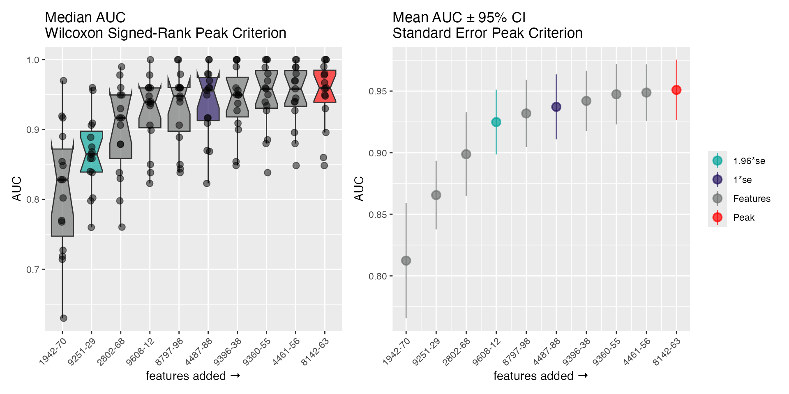
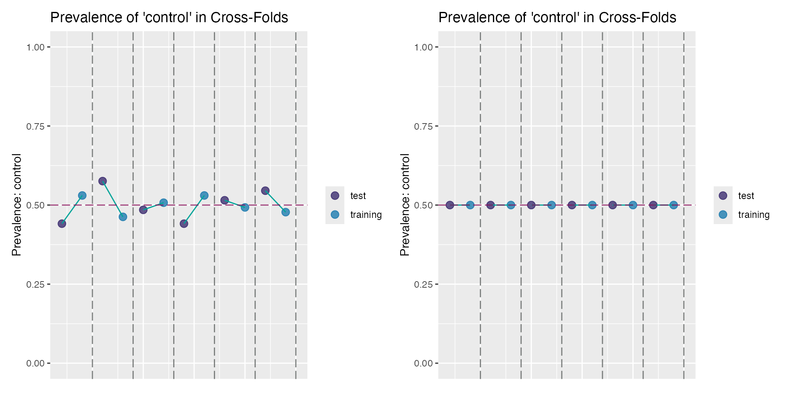

Introduction to featureselectr
featureselectr.RmdThe featureselectr package is an object oriented package
containing functionality designed for feature selection, model building,
and/or classifier development.
Two primary functions in featureselectr
-
feature_selection()- Sets up the feature selection object containing all search information.
-
Search()- Performs the actual search.
Search Type Helpers
There are two main search types to choose from. See
?search_type.
search_type_forward_model() # Forward stepwise
#> ── Forward Search ────────────────────────────────────────────────────
#> • display_name 'Forward Stepwise Model Search'
#> • max_steps 20
#> ──────────────────────────────────────────────────────────────────────
search_type_backward_model() # Backward stepwise
#> ── Backward Search ───────────────────────────────────────────────────
#> • display_name 'Backward Stepwise Model Search'
#> ──────────────────────────────────────────────────────────────────────Model Type Helpers
There are three main model types to choose from. See
?model_type.
model_type_lr() # Logistic regression
#> ── Model: logistic regression ────────────────────────────────────────
#> • response 'Response'
#> ──────────────────────────────────────────────────────────────────────
model_type_lm() # Linear regression
#> ── Model: linear regression ──────────────────────────────────────────
#> • response 'Response'
#> ──────────────────────────────────────────────────────────────────────
model_type_nb() # Naive Bayes
#> ── Model: naive Bayes ────────────────────────────────────────────────
#> • response 'Response'
#> ──────────────────────────────────────────────────────────────────────Cost Helpers
There are five available cost functions, that the used
typically does not need to call directly. Simply pass one of the
following as a string to the cost = argument to
feature_selection(). See ?feature_selection
and perhaps ?cost.
- AUC: Area under the curve (classification)
- CCC: Concordance Correlation Coefficient (regression)
- MSE: Mean-squared Error (regression)
- R2: R-squared (regression)
-
sens/spec: Sensitivity
+Specificity (sum; classification)
Feature Selection with Naive Bayes
The analysis below is performed with the simulated data set from
wranglr::simdata. We fit a Naive Bayes model during the
feature selection. The setup below specifies 3
independent runs of 5 fold cross-validation.
Higher folds might generate slightly different results, but a 20-25% hold-out is fairly common. Of course, more runs (repeats) will take longer. There are 5 features that should be significant in a binary classification context. They are identified in the attributes of the object itself. We will restrict the search to the top 10 steps (there are 40 total features; thus approx. 35 false positives).
Setup feature_select Object
data <- simdata
# True positive features
attributes(data)$sig_feats$class
#> [1] "seq.2802.68" "seq.9251.29" "seq.1942.70" "seq.5751.80"
#> [5] "seq.9608.12"
# log-transform, center, and scale
cs <- function(x) {
out <- log10(x)
out <- out - mean(out)
out / sd(out)
}
# scramble order of feats random
feats <- withr::with_seed(123, sample(helpr:::get_analytes(data)))
data[, feats] <- apply(data[, feats], 2, cs)
# set model type and column name of response variable
mt <- model_type_nb(response = "class_response")
# set search method function to 'forward' and 'model'
# restrict to the top 10 steps in the search; then stop
sm <- search_type_forward_model(max_steps = 10L)
# setup feature selection object
fs_setup <- feature_selection(
data,
candidate_features = feats,
model_type = mt,
search_type = sm,
runs = 3L,
folds = 5L,
cost = "AUC",
random_seed = 1
)
fs_setup
#> ══ Feature Selection Object ══════════════════════════════════════════
#> ── Dataset Info ──────────────────────────────────────────────────────
#> • Rows 100
#> • Columns 55
#> • FeatureData 40
#> ── Search Optimization Info ──────────────────────────────────────────
#> • No. Candidates '40'
#> • Response Field 'class_response'
#> • Cross Validation Runs '3'
#> • Cross Validation Folds '5'
#> • Stratified Folds 'FALSE'
#> • Model Type 'fs_nb'
#> • Search Type 'fs_forward_model'
#> • Cost Function 'AUC'
#> • Random Seed '1'
#> • Display Name 'Forward Stepwise Model Search'
#> • Search Complete 'FALSE'
#> ══════════════════════════════════════════════════════════════════════Perform the Search
The S3 method Search() performs the actual feature
selection, and method dispatch occurs depending on the class of
fs_nb.
fs_nb <- Search(fs_setup)Plot the Selection Paths
There is an S3 plot() method easily visualizes the steps
of the selection algorithm, and highlights the peak (AUC) and the models
at
and
from the peak. The 2 panels show a distribution-free representation of
the data (left; Wilcoxon signed-ranks with medians) and a distribution
dependent representation (right; standard errors with means and
CI95%).
plot(fs_nb)
Logistic Regression
We can use the update() method to modify the existing
feature_select object.
fs_update <- update(
fs_setup, # the `feature_selection` object being modified
model_type = model_type_lr("class_response"), # logistic reg
search_type = search_type_forward_model(max_steps = 15L), # increase max steps
stratify = TRUE # now stratify
)
fs_update
#> ══ Feature Selection Object ══════════════════════════════════════════
#> ── Dataset Info ──────────────────────────────────────────────────────
#> • Rows 100
#> • Columns 55
#> • FeatureData 40
#> ── Search Optimization Info ──────────────────────────────────────────
#> • No. Candidates '40'
#> • Response Field 'class_response'
#> • Cross Validation Runs '3'
#> • Cross Validation Folds '5'
#> • Stratified Folds 'TRUE'
#> • Model Type 'fs_lr'
#> • Search Type 'fs_forward_model'
#> • Cost Function 'AUC'
#> • Random Seed '1'
#> • Display Name 'Forward Stepwise Model Search'
#> • Search Complete 'FALSE'
#> ══════════════════════════════════════════════════════════════════════Perform the Search
fs_lr <- Search(fs_update)Return the Plot Features
get_fs_features(fs_lr)
#> ══ Features ══════════════════════════════════════════════════════════
#> • features_max 12
#> • features_1se 8
#> • features_2se 6
#> ── features_max ──────────────────────────────────────────────────────
#> 'seq.1942.70', 'seq.9297.97', 'seq.9608.12', 'seq.4914.10', 'seq.9360.55', 'seq.8142.63', 'seq.1130.49', 'seq.9373.82', 'seq.9251.29', 'seq.2802.68', 'seq.3459.49', 'seq.6356.60'
#> ── features_1se ──────────────────────────────────────────────────────
#> 'seq.1942.70', 'seq.9608.12', 'seq.9360.55', 'seq.8142.63', 'seq.9373.82', 'seq.9251.29', 'seq.2802.68', 'seq.3459.49'
#> ── features_2se ──────────────────────────────────────────────────────
#> 'seq.1942.70', 'seq.9608.12', 'seq.8142.63', 'seq.9251.29', 'seq.2802.68', 'seq.3459.49'Class Stratification Plot
You can also check the class proportions (imbalances) of the cross-validation folds based on the proportion of binary classes (for classification problems).
This should be most evident when comparing the folds with and without forced stratification. Below is a sample plot of the cross-validation folds without stratification (left) and after an update to the object to include stratification (right):
no_strat <- feature_selection(
data, candidate_features = feats,
model_type = mt, search_type = sm,
runs = 2L, folds = 3L
)
with_strat <- update(no_strat, stratify = TRUE)
plot_cross(no_strat) + plot_cross(with_strat)